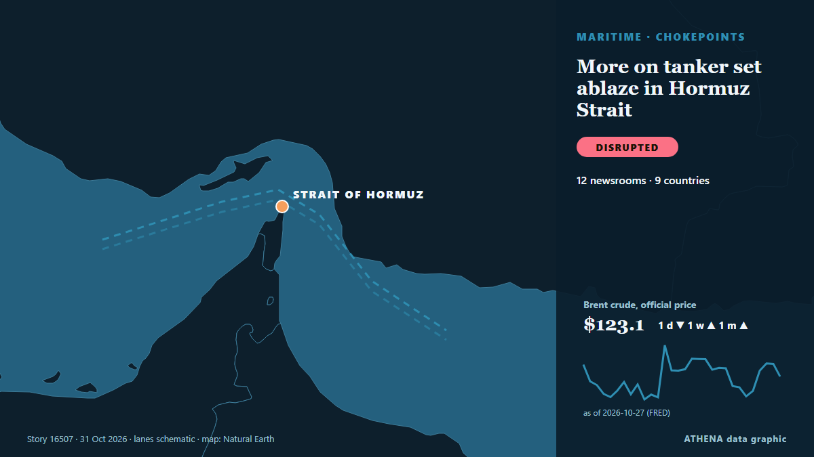

Handel, Industrie und Infrastruktur
Schlagzeilen werden auf Englisch angezeigt, wie veröffentlicht.

Schifffahrt und HäfenMore on tanker set ablaze in Hormuz Strait
KUWAIT CITY, Oct 23: A tanker reported being struck by an unknown projectile while sailing outbound through the Strait of Hormuz, about seven nautical miles northeast of Limah, Oma... von Arab Times
| 18. Okt. | 14 |
|---|---|
| 19. Okt. | 59 |
| 20. Okt. | 29 |
| 21. Okt. | 40 |
| 22. Okt. | 96 |
| 23. Okt. | 74 |
| 24. Okt. | 44 |
| 25. Okt. | 56 |
| 26. Okt. | 120 |
| 27. Okt. | 106 |
| 28. Okt. | 88 |
| 29. Okt. | 82 |
| 30. Okt. | 76 |
| 31. Okt. | 2 |
Uzbekistan–Türkiye Trade Agreement to Cover More Products
Uzbekistan and Türkiye have agreed to expand the list of goods eligible for preferential trade treatment and signed agreements on. von The Times of Central Asia
22 African Heads of State Join AU Chairperson at Russia-Africa Summit in Moscow
By Yankuba Jallow Twenty-two African countries are represented by their heads of state at the third Russia-Africa Summit in Moscow, where Russian President Vladimir Putin and African leaders are… von Foroyaa
Russian citizen faces spying charges in Poland after photographing railways
The suspect was arrested while taking pictures at an unguarded railway crossing. von Politico Europe
New levy on non-EU parcels kicks in Nov 1
The handling fee comes on top of the €3 duty imposed in July on small packages worth less than €150. von Free Malaysia Today
Greece and Turkey Clash at UN Over Libya Maritime Agreement
Greece and Turkey engaged in a sharp diplomatic confrontation at the United Nations Security Council on Thursday, over the controversial 2019 Turkey-Libya maritime agreement, exchanging accusations… von Greek Reporter
Turkey-Libya maritime delimitation MoU ‘null and void’ says Cyprus
The Republic of Cyprus has reiterated its position that the 2019 Turkey-Libya MoU on maritime delimitation is “null and void”. von Cyprus Mail
Afghanistan opium poppy cultivation surges despite Taliban govt ban: UN
Opium poppy cultivation in Afghanistan more than quadrupled in 2026 despite a Taliban government ban, the United Nations said on Thursday, urging that impoverished farmers needed alternatives to the… von Dawn
Sangakkara alleges discriminatory treatment by Ryanair staff in Dublin
Former Sri Lankan cricket captain Kumar Sangakkara has expressed dissatisfaction over an alleged incident involving Ryanair gate staff at Dublin Airport, describing the experience with his family as… von Daily Mirror
PM Mitsotakis at UN: Turkish-Libyan memorandum illegal and arbitrary, geography cannot be rewritten
International law could not be applied selectively and rules governing the seas could not be rewritten to serve the ambitions of individual states, Prime Minister Kyriakos Mitsotakis stressed… von Keep Talking Greece
Vessel reported on fire in Strait of Hormuz: UK maritime agency
Fire on vessel reported 25 nautical miles northeast of Khasab, Oman. von Anadolu Agency (English)
“CHOGM 2026 is our moment to shape what comes next” – Commonwealth Secretary-General
World leaders will gather in St John’s, Antigua and Barbuda next week for the 28th Commonwealth Heads of Government Meeting (CHOGM) with a call to accelerate partnerships and investment in the… von Post-Courier (PNG)
Kenya: Ruto Urges Russia to Invest in African Industries, Technology Transfer
[Capital FM] Nairobi -- President William Ruto has urged Russia to invest in African industries, technology transfer and skills development, saying the continent must move away from exporting raw… von AllAfrica
US-EU trade truce at risk over $3.4 billion Airbus loan, Trump official warns
US Trade Representative Jamieson Greer warned on Monday that a $3.4 billion European Investment Bank loan to Airbus could jeopardise a tariff truce between Washington and Brussels. von France 24 English
Zelenskyy: Tankers carrying Russian diesel to US will not be targeted
Reuters said Russia has resumed diesel shipments to its major buyers following Trump’s diesel deal, with one tanker departing for Turkey on Oct. von Kyiv Post
Five baobab trees destined for Georgia seized in South Africa
The trees were destined for a landscaping project in Georgia. von JAMnews (English)
Sydney’s New International Airport Opens to Passengers
Sydney’s second airport is named after the first Australian woman licensed to fly paying passengers. von ABC News Australia
Trump announces Audi will build $4 billion US factory in Georgia
PERRY, GEORGIA: US President Donald Trump announced on Saturday that Audi plans to build a $4 billion assembly plant in Georgia that will produce 200,000 SUVs annually, as he seeks to convince… von Business Recorder
Amid Legal Uncertainty, US Lawmakers Warn Banks, Ports Over Russian Diesel Imports
A bipartisan group of US lawmakers have warned American banks, port authorities and fuel-industry groups against facilitating imports of Russian diesel, raising the prospect of congressional… von RFE/RL (English)
Pakistan bars Taiwanese airlines from its airspace in line with One-China policy: report
Pakistan has barred Taiwanese airlines from using its airspace in support of Beijing’s One-China policy, becoming the first country to take such a step, Bloomberg reported on Wednesday. von Dawn
Yemen's hospitals buckle as fighting escalates
TAIZ: In a hospital in Yemen's Taiz, a 25-year-old pregnant mother of two lay immobilised after a bullet lodged in her spine while she was trapped inside her home without food or... von Oman Observer
'Call of Duty' North Korea Invasion Edition Tops Sales Charts in South
A fictional North Korean invasion of Seoul is becoming fodder for a real political battle in South Korea, with the latest installment of the blockbuster Call of Duty franchise drawing politicians… von Korea Herald
Volkswagen Looks To Export 300,000 Vehicles From China By 2030
Volkswagen said that for the first time it will also export technology developed in Hefei to other parts of Asia, the Middle East and South America, but not Europe for now. von Channels TV
PHL sees no impact from Indonesia reduction of gas exports to Singapore
The Philippines has been assured of continued coal and gas supplies from Indonesia, Energy Secretary Sharon… von BusinessWorld
(2nd LD) N.K. leader may have discussed potential talks with U.S. during China visit: spy agency
A Chinese delegation arrived in North Korea on Thursday ahead of the anniversary of China’s entry into the Korean War, amid an unconfirmed report that DPRK officials are visiting China to prepare for… von NK News
Obama mocks Trump’s government-wide response to Cheesecake Factory remark ahead of US midterms
Former US president Barack Obama on Wednesday mocked President Donald Trump for mobilising a government-wide response to his earlier remark that Trump had “got the White House looking like Saddam… von Dawn
Government to cut public EV charging costs to save drivers £150 a year
The news was announced in the Budget 2026 yesterday [October 29] in a bid to give drivers that rely on electric vehicles some 'breathing space' in the current cost of living. von WalesOnline
Malawi: Who Is Running Malawi? Opposition Seeks Answers Over Mutharika's Trip Abroad
[Nyasa Times] Questions are mounting over the prolonged absence of President Peter Mutharika from Malawi, as the country struggles with fuel shortages, empty hospital shelves and deepening economic… von AllAfrica
Bangladesh presses India before Ganges water treaty expires
RAJSHAHI: With a 30-year Ganges water-sharing treaty with India expiring in December, Bangladesh fears failure to strike a new deal could deepen water shortages, threatening tens of millions of… von New Straits Times
Houthis say Saudi-led airstrikes killed 14 at a market in northern Yemen, and other Mideast news
Iran-backed Houthi rebels say Saudi-led airstrikes have killed 14 people in a busy market in northern Yemen. von ABC News (International)
Horror as EasyJet flight to Glasgow reports 'mass vomiting' among passengers
The horrific event caused cabin crew to alert ground control after several passengers became unwell. von WalesOnline
German police arrest two suspected of planning sabotage attacks for Russia, Spiegel says
Oct 28 - Police have arrested two Belarusian nationals suspected of planning sabotage attacks in southern Germany, the Munich General Prosecutor's Office said on Wednesday, with Der Spiegel magazine… von The Straits Times
Egypt, Bahrain and UAE Back Greece Over Turkey-Libya Maritime Deal
Greece gains the backing of Egypt, Bahrain and the UAE in opposing the Turkey-Libya maritime accord, as tensions over maritime boundaries and energy exploration intensify. von Greek City Times
Uzbekistan to Open Tashkent International Academy of Fashion
Uzbekistan plans to open a fashion academy in Tashkent to help local clothing manufacturers develop their own brands and sell. von The Times of Central Asia
"When Will You Heal?" UAE President Plans Training With flydubai Captain Smit Machchhar
UAE President Sheikh Mohamed bin Zayed Al Nahyan conferred the First Class Order of Zayed II on Captain Machchhar and fellow crew members. von NDTV